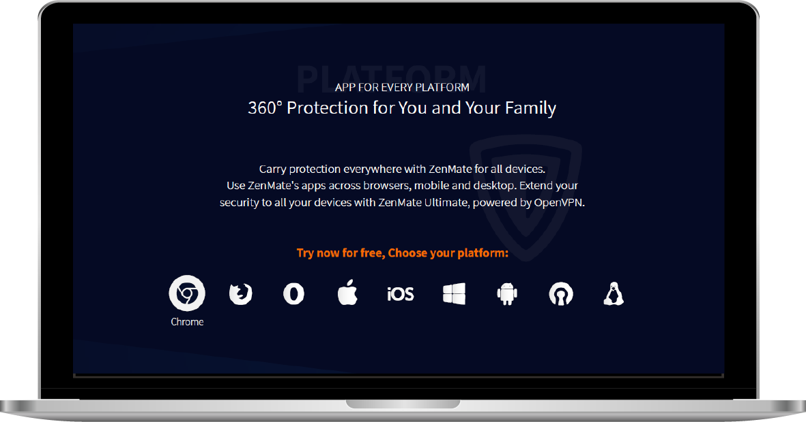

I'M
Shaked Dinar
I'm a UX|UI designer with a passion for programming.
I worked on various digital and print projects, can't wait for the next adventure!
Have a look at my
MY
Projects
"Is It Dangerous?" Web Game
As part of my final project in my Instructional Design degree at Holon Institute of Technology, I had to produce a computer game to help children ages 6-8 raise awareness about the dangers and safety at home.
I designed and produced the entire game.
Designed with Adobe Illustrator and Adobe Photoshop.
Produced with VisualStudio environment with JavaScript and JQuery languages based on HTML5 & CSS3.
The project took about one year and included problem and need understanding and solution creation from scratch.
The process included creating low fidelity wireframes to high fidelity mockup.

As part of the project I had to search and explore about gaming behavior and gaming UX/UI.
I had to find inspirational games and characters, game stories and to adjust it to the audience.
I made an audience research as well, to understand the need, the behavior and the abilities.
My final project grade is 95.
Rebrand for VPN product web
This project is a rebranding for VPN product web page.
It included fixing UX problems and re-designing the web.
It included fixing UX problems and re-designing the web.
Designed with Adobe Illustrator and Adobe Photoshop.


Print Products Design
Since 2016 I’m Adi Shaviv’s graphic designer.
Through the years I designed various products.
Through the years I designed various products.
Designed with Adobe Illustrator and Adobe Photoshop.

Inspirational book (best seller).
The book includes inspiration quoets which designed with inspiration picture.
Weekly Diary
The diary includes special design for each month.
Logo Rebranding
Rollup design